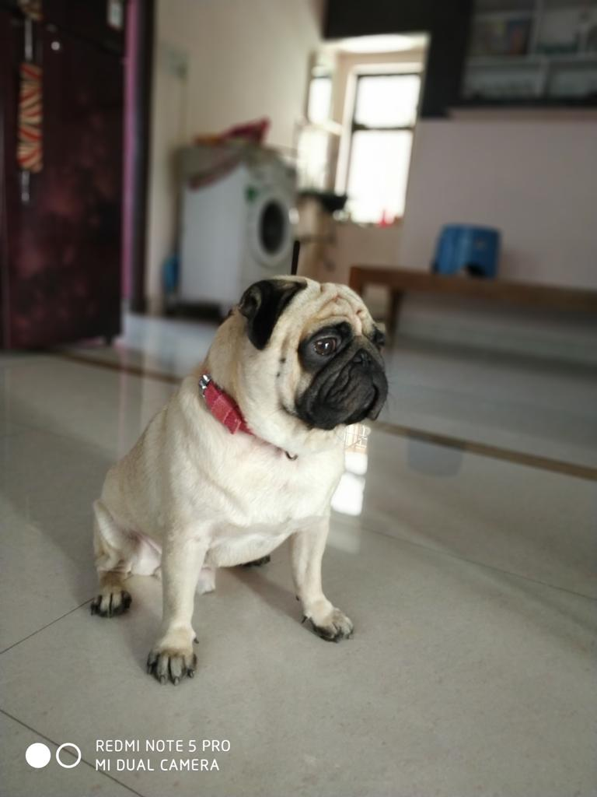
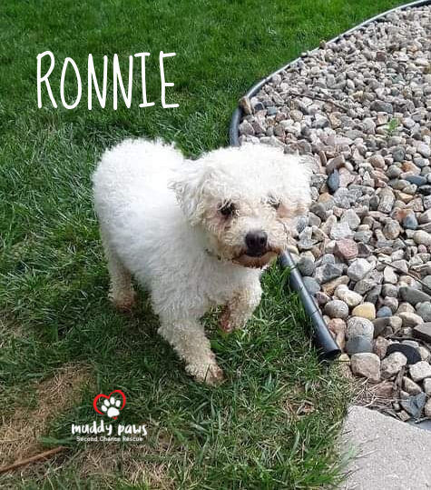

- Deciphering dog body language is an important part of communicating with your canine.
- Dogs use posture, facial expressions, and other body language to communicate.
- Understanding your's dog body language is a key aspect of responsible ownership.
Dog body language involves a series of unique methods for communicating emotions and intentions. It can be quite different from how humans communicate.
A lot of canine communication consists of barks, whines, and growls, so it’s important to know what dog sounds mean. More often, though, dogs rely on nonverbal body language. That can lead to plenty of human-dog misunderstandings. Sometimes, dog body language is simply unfamiliar (after all, people don’t have tails). At other times, it’s in direct contrast with what that same signal means to a human, such as with yawning or looking away. To better communicate with your canine companion, learn some tips on reading dog body language.
Tail Wagging
Tail wagging seems like an obvious body language signal. If a dog’s tail is wagging, the dog is happy, right? Wrong. People misinterpret this signal all the time. All a wagging tail means is that the dog is emotionally aroused. It could be excitement, but it could be frustration or worse. To interpret the dog’s emotions and intentions, look at the speed and direction of the wag as well as the position of the tail.
Basically, the faster the wag, the more aroused the dog. Think about those long, slow, side-to-side tail sweeps your dog makes when greeting you — the type that wag the dog’s whole body. That’s a relaxed dog. A faster twitch-like wag indicates a higher level of arousal and possibly in a negative way. Think of a guard dog on alert.
The direction of the wag may hold clues as well. A recent study on tail-wagging showed that dogs tend to wag more to the right when they feel positive about something, like interacting with their owner. Tails wagged more to the left when dogs faced something negative. Then, there’s the helicopter tail wag where the dog’s tail spins in a circle. Without question, that’s a happy wag. You’ll usually see it when a dog is greeting a beloved person.
Finally, the position of the dog’s tail relative to the ground holds important clues about their emotional state. Essentially, the higher the tail, the more assertive the dog. Dogs with their tails pointing down to the ground or even tucked between their legs are feeling fear and stress. Dogs with their tails held up like a flag are feeling confident, perhaps even aggressive. Relaxed dogs hold their tails in a neutral position, but neutral depends on the breed. Some breeds, like Chow Chows, have tails that naturally curl over their backs whereas breeds like the Italian Greyhound have a very low neutral tail position. If you get to know your dog’s neutral tail position, you will more quickly recognize when their emotions have shifted.

Raised Hackles
When a dog’s hackles are raised, it means the hair along their back is standing up. Technically called piloerection, the fur can fluff up across the shoulders or down the back and all the way to the tail. This is a definite sign that the dog is aroused, but not necessarily in a negative way. The dog might be upset or stressed but could also be excited or intensely interested in something. It’s often an involuntary reaction, like goosebumps in people.
Posture
A dog’s weight distribution can tell a lot about mood and intention. Consider a cowering dog that is hunched toward the ground. That’s a sign of fear or stress. The dog may be trying to get away from something and the posture makes the dog appear smaller. In other words, it says, “I mean no harm.” The extreme of this posture is a dog that rolls onto their back exposing the belly. This may look like a dog soliciting a belly rub, and in a relaxed dog, it often is. But it can actually be a sign of considerable stress and anxiety. The dog may even urinate a little in appeasement.
The opposite posture is a dog with his or her weight shifted forward. This dog is trying to get closer to something. This might simply indicate the dog’s interest. But it could also indicate offensive intentions, particularly paired with other aggressive body language cues like a twitching tail held high. In this case, the dog is trying to appear larger.
An easy-to-read aspect of dog body language is the play bow. This is when dogs place their chest on the ground with their rump in the air. As the name implies, it’s used to initiate play with other dogs and even with people.
A less easily understood signal is the paw raise. In the pointing breeds like the English Setter, the paw raise is part of pointing behavior where the dog indicates nearby prey. But outside of this context, a raised paw often indicates a dog is uncertain about a situation or perhaps feels a bit insecure.
Facial Expressions
Dogs have similar facial features as people, but they don’t use them in the same way. Consider yawning. People yawn when they’re tired or bored, but dogs yawn when they’re stressed. According to Turid Rugaas, author of On Talking Terms With Dogs: Calming Signals, dogs use yawning to calm themselves in tense situations and to calm others, including their owners. She suggests yawning at your dog to provide comfort at stressful moments like a vet visit. But don’t be surprised if your dog yawns back. Just as yawning is contagious in people, dogs can “catch” yawns too.
Lip-licking is another bit of dog body language that people often misinterpret. Just like people, dogs will lick their lips after a delicious meal, but they will also do it when they feel anxious. Sometimes the tongue flick is so quick it’s tricky to notice. Your dog isn’t signaling a desire to lick your face, but rather discomfort with a given situation.
The most confusing facial expression is smiling. Yes, some dogs smile, and if you’re not familiar with the expression it can look terrifying. Usually, when dogs bare their teeth, it serves as a warning, as if they’re saying, “Look at my weapons.” It’s hard to mistake the aggressive intention of a snarl, especially when it’s paired with a menacing growl. The corners of the dog’s lips form the shape of a C and the front teeth are fully displayed.
Smiling dogs also display their front teeth, but the meaning is the complete opposite. Also known as a submissive grin, this expression is often found on a happy dog with a loose and wiggly posture. The dog’s overall attitude says, “Hello, I come in peace.”

Eyes
You can learn a lot about your dog’s internal state by looking at the eyes. First, a dog’s eyes can be soft or hard. Soft eyes have relaxed lids and sometimes look like the dog is squinting. They indicate the dog is calm or happy. The opposite is hard eyes where the eyes seem to go cold. These indicate a negative state of mind, and you’ll know them when you see them. The dog might be guarding a toy or feeling aggressive. A hard stare, where the dog looks intently at something, especially for a long time, usually signals a threat.
Eye contact is an important signal for dogs. Just as the hard stare can be a precursor to aggression, looking away is meant to calm a situation. When dogs feel stressed, they will pointedly look away and avoid eye contact. People often interpret this as their dog ignoring them or being stubborn, but the dog is expressing discomfort.
The whites of the eyes are another key indicator. Known as “whale eye”, when a dog shows the whites of the eyes, it’s a signal they are feeling anxious or stressed in a situation. You might see them when you make your dog uncomfortable, like when you pat your dog on the head, or when they’re afraid someone will steal a bone or toy.
Deciphering Dog Body Language
None of these dog body language signals act alone. They are all part of a package. So, when you read a dog’s communication, look at every signal the dog is using from the tail height to the eye shape. Your dog is “talking” to you all the time. If you learn what your dog is saying, you will develop a deeper bond of trust and respect. Plus, your newfound understanding of your dog’s emotional state will help you predict your dog’s behavior and prevent problems before they occur.